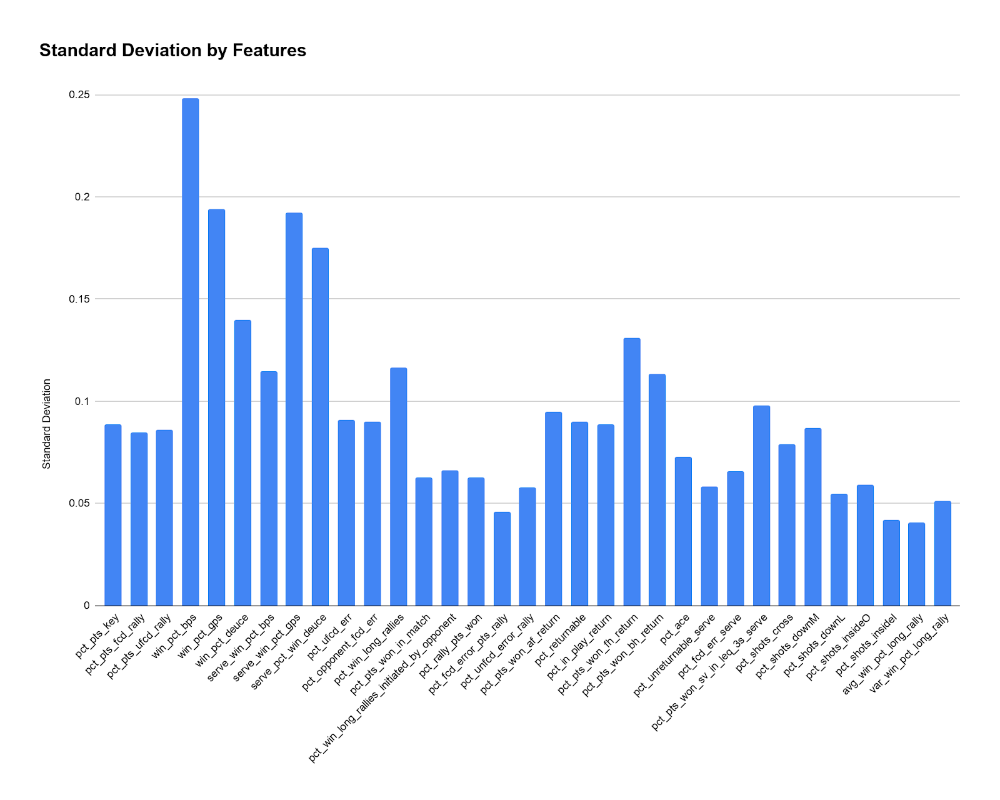
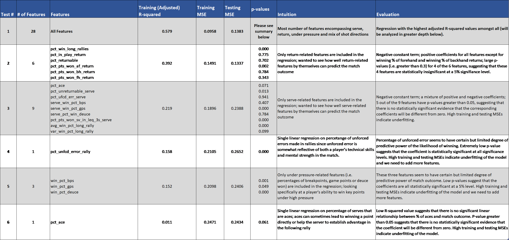
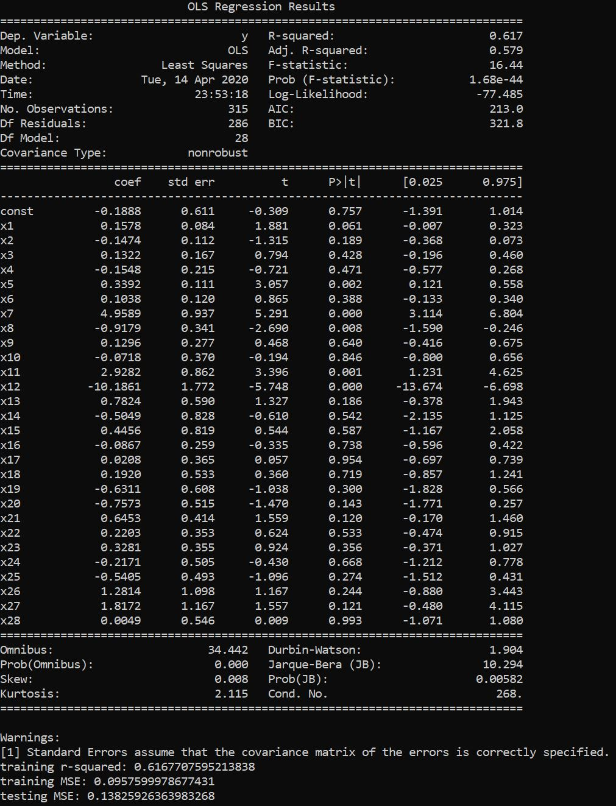
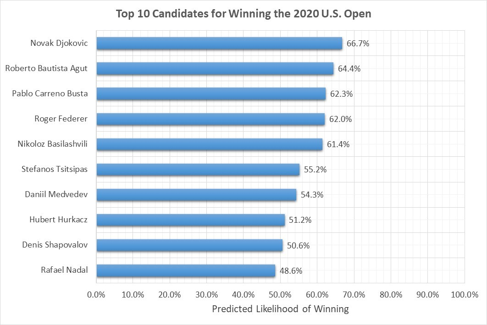
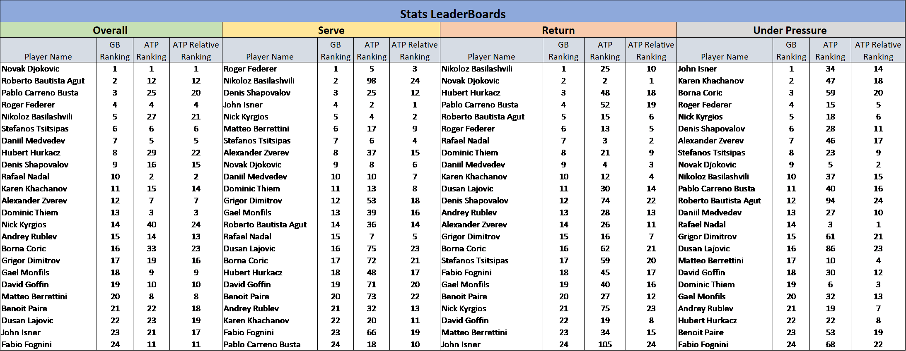

Who is the Next Winner of U.S. Open?
Link to Our Github Repository!
Project Overview and Prediction Goal
Inspired by the Australia Open that just concluded and the increasing role of data analytics
in sports, our project aims to develop insightful predictions about wins and losses in tennis
matches by collecting, cleaning, categorizing and applying statistical as well as machine
learning techniques to identify interesting patterns in past data.
Prediction Task: Among the current Top 30 male singles tennis players by ATP
rankings, who has the highest probability of winning the 2020 U.S. Open?
Sub-Questions to Investigate:
- What factors determine the outcome of a tennis match (i.e. wins and losses)?
- Among those factors, which ones are the most indicative of a match outcome (i.e. most
influential features)?
- How does our prediction compare to the current ATP male singles ranking?
- Are there any patterns shared amongst players themselves?
Metrics to Measure Success:
-
Regression Test: Adjusted R-squared value, Training and Testing Mean Squared Errors
-
K-Means Clustering: Qualitative analysis with respect to the generally accepted
classification of each player's style
-
Comparison with the ATP rankings: Kendall's Tau Correlation Coefficient
Data Cleaning and Processing
We used two primary data sources for this project: the Match Charting Project, a collaborative,
crowdsourcing Github repository which documents the point-by-point statistics for each player in
a match, and the ATP official website. From the Match Charting Project, we collected data for 1000+
matches (hard surfaces only), filtered them by keeping the 197 matches between Top 30 male singles
players ranked by ATP by 2020/02/24, and extracted 60+ different features encompassing serve, return,
under pressure, shot directions, shot types and many other aspects of a match. After processing
the features and eliminating the ones that contain over half null values, we were left with 28
"good" features, all with values between 0 and 1, across 394 observations concerning 24
out of the Top 30 players. The selected features strike a balance between wide coverage of different
components of a match and the limitations of too many null values. The detailed description of each
feature and processed data can be found under "features.xlsx" and "processed_data.csv"
in the Github repository. From the ATP official website, we scraped the data pertaining to serve, return
and under pressure leaders, and service and return games won from 2015 to 2019, all of which were clean
and required no restructuring.
Preliminary Data Analysis
Figure 1: Standard Deviations of 28 Features

When we looked at the visualization for standard deviation of each feature, we noticed that most
features have a standard deviation of less than 0.1. This implies that there is a certain amount
of skill level that each player must achieve within these features to be deemed a Top 30 player.
The potentially more interesting features to look at, however, are those with greater standard deviation,
signalling that there is greater variance in the player's performance in these features. For example,
"win_pct_bps", which represents the percentage of breakpoints won, stands out as having
the highest standard deviation near 0.25. We expect this feature could be a differentiating, or indicative
factor when determining top tennis players.
Statistical Test 1: Linear Regression
To solve our prediction task, we have chosen to perform linear regression, the most commonly used
type of predictive analysis. It helps us to examine whether some subset of the 28 features do a good
job in predicting the outcome of a match and in what ways these variables impact the match outcome
(i.e. sign and magnitude of the coefficients). In our linear regression model, each observation or
data point is specific to one player in the match. The dependent variable is the match outcome which
is binary (i.e. 0 if the player loses and 1 if the player wins), while the regressors are the performance
statistics of the player in that match.
Our processed tennis data consists of a total of 394 observations, each with 28 features which cover
different aspects of a tennis match such as shot directions, serve performance, return quality, forced
and unforced errors and many others. We split the 394 observations so that we could use 80% of data points
for training and the resulting 20% for testing. Multiple and single linear regressions were then run with
20+ different subsets of the features and the chart below summarizes 6 interesting regression results and our intuition
of running them.
Table 1: Summary of 6 Interesting Regression Tests

Among all regression tested, the multiple linear regression that encompasses all 28 features gave us
the highest adjusted R-squared value of 0.597. The complete regression results are
shown in the figure below.
Figure 2: Results Summary for Regression with all 28 Features

Intepretation and Evaluation:
- Adjusted R-squared value: this particular regression model, all inclusive of
28 features, yields the highest adjusted R-squared value of 0.597, meaning that
the 28 features collectively explain about 60% of the variances in the match outcome. We are fairly
satisfied about the adjusted R2 value of 0.597 because we lost many features that we
deemed important during data cleaning and restructuring.
*Note: adjusted R2 value is examined rather than R2 value. More features
would always increase the explained sum of squares and R2 value and therefore we need to
account for the degree of freedom by looking at adjusted R2 value.
- Training and Testing MSEs: our training and testing MSEs are 0.0958 and 0.1383 respectively.
Compared to other regression tests we've run, the testing MSE of 0.1383 is higher by a
relatively larger amount than the training MSE, suggesting potential overfitting of our model.
However, the difference was not too significant and we decided to proceed with this regression model
for prediction since it provides the highest adjusted R-squared value and relatively small training
and testing MSEs.
- Coefficients and their p-values: considering our primary goal of predicting winners,
we decided to maximize the adjusted R-squared value despite potential compromises in p-values.
In the regression result, we did acknowledged many high p-values (i.e. greater than 0.05) on the
coefficients, suggesting that there is no statistically significant evidence that the coefficients
on those features are different from zero. However, one possible reason is that many of the features
are somewhat intercorrelated. For example, the winning % of long rallies (i.e. regressor x9), may be
dependent on the advantages established by high-quality serve and forehand and backhand returns. It is
indeed both statistically and practically difficult to extract solely isolated features because tennis
matches are continuous and shots are built upon each other.
We then calculated each player's average performance for each feature from historical matches and applied
the weights and constant derived from the multiple linear regression shown above to the averages. According to
the predicted outcome, the Top 5 candidates for winning the crown are: Novak
Djokovic, Roberto Bautista Agut, Pablo Carreno Busta, Roger Federer, and Nikoloz Basilashvili.
Figure 3: Top 10 Most Likely Winners with their Predicted Likelihood:

Sub-test: Recursive Feature Elimination
To figure out which out of the 28 features are most indicative of the match outcome, we have chosen to perform
Recursive Feature Elimination (RFE), which would recursively remove features and build a model on those features
that remain. RFE uses the model accuracy to identify which features (and combination of features) contribute the
most to predicting the match outcome. In our implementation, we used logistic regression algorithm to select the
top 6 features, which turned out to be: winning % of game points as the server, winning % of long rallies, winning
% of after return, winning % of forehand return, winning % of backhand return and winning % in less than or equal
to 3 strokes as the server. Initially, we were thinking about only picking out the three most important features
and using a 3D scatter plot to show all players' performances on those; however, we eventually decided to use radar
charts because they are visually clearer in terms of showing how well or badly each player does in each feature and
highlighting anomalies if any. We therefore plotted the top 5 candidates' performance with respect to each of the 6
features in radar charts first by player and then by feature (top). To see whether there are truly recognizable differences
in the most and least likely winners' scores in those features, we also plotted the same radar charts for the least
likely winners (bottom).
Figures 4 and 5: 5 Most Likely Candidates' Scores for the 6 Most Indicative Features
Figures 6 and 7: 5 Least Likely Candidates' Scores for the 6 Most Indicative Features
Intepretation and Evaluation:
Statistical Test 2: K-Means Clustering
For the data scraped from the ATP official website, we have chosen to apply K-means clustering on
individual player's serve, return, and under pressure performances. In particular, we wanted
to see whether the Top 30 players can be categorized into groups and identify the "cluster"
to which our predicted winner belongs, which might provide additional insights to our prediction results.
To run the algorithm, we had to combine each player's results from multiple years (i.e. 2015-2019) into
one by computing the average. The optimal K from the elbow plot was 4 and therefore the players were
separated into 4 groups, as shown in the below graphs. Some sensitive attributes that we are potentially
missing are career length (i.e. older players tend to be more experienced at dealing with different opponents
and pressure), injuries (not documented but may affect players' performance), and weather conditions which
may affect outdoor performance on hard surfaces.
Figures 8 and 9: 2D K-means Clustering Visualization
"Games_2d", the graph on the top left, shows relative strengths of each player with respect to ave_serve_games_won
(% of games the player has won as the server) and ave_return_games_won (% of games the player has won as the
receiver). "Leaders_2d", the graph on the top right, shows relative strengths of each player with respect to
ave_serve_rating (sum of four service metrics % + average number of aces per match - average number of double
faults per match) and ave_return_rating (sum of winning percentages in the four service return categories). In these
two graphs, K-means clustering algorithm classifies the players into four groups:
- Blue: Strong in both serves and returns
- Orange: Much stronger in serves than they are in returns
- Green: Much stronger in returns than they are in serves
- Red: Not particularly strong in either
These clusters correspond to most mainstream comments on these players. For instance, R.Nadal, N.Djokovic, R.Federer
are known for their well-rounded tennis skills, and they have been occupying the top 3 rankings for male tennis players
for years. John Isner is known for his powerful serves, and Diego Schwartzman is famous for his effective returns,
which are all in line with the output of k-means clustering algorithm.
Figures 10 and 11: 3D K-means Clustering Visualization
"Games_3d", the graph on the top left, adds another metric, ave_under_pressure_rating (sum of % of break points
converted and saved, percentages of tie-breaks won, and percentage of deciding sets won). K-means clustering categories
the players into four groups:
- Blue: Not particularly strong or weak in any of the three metrics
- Orange: Weak in serves, mediocre in returns and dealing with stress
- Green: Strong in all three metrics
- Red: Strong in serves, weak in returns, mediocre in dealing with stress
As we can see, Federer, Nadal, and Djokovic are still leaders in all three categories, and although there are some changes
in the other three groups, they remain mostly the same as Games_2d, which may be indicating that under pressure
rating is less a significant factor in determining types of male tennis players than serve and return records are.
Like "Games_3d", "Leaders_3d" adds ave_under_pressure_rating as another metric on the basis of Leaders_2d. However,
we can notice some significant changes in the clusters when comparing Games_3d and Leaders_3d:
- NK, JL, MB remain in the same cluster, but all other three clusters have significant changes.
- In Leaders_3d's blue cluster, there are only Federer and Djokovic, whereas Nadal is not
grouped in this cluster since his serve and return ratings are much different than those of
Federer and Djokovic, even though they have similar winning percentages of serves and returns as
indicated by Games_2d.
- The orange clusters in the two 3D graphs are drastically different. Given that the ave_under_pressure
ratings are identical, the different measures of serves and returns in each graph lead to different
clustering results. This difference raises a question about how to decide which measure of serves and
returns produces a better, more accurate result.
GoldenBagel's Ranking v.s. ATP Ranking
Using weights and constants from linear regressions with all 28 features, only serve, only return and only
under pressure-related features, we have ranked the players based on their predicted likelihood of winning and
generated our own Stats LeaderBoards. We then looked at these players' ranking on the ATP official website:
the overall rankings are from ATP's male singles ranking whereas the serve, return and under pressure rankings
are scraped from the "Stats LeaderBoard" section filtered with fields "versus Top 50 Players",
"52 weeks" and "Hard Surface". Since the ATP rankings are inclusive of all male tennis
professionals, we decided to compare our rankings of the 24 players with their relative ATP rankings. The results
are summarized in the table below and we will be performing more in-depth analysis on this using the
Kendall's Tau Correlation Coefficient.
Table 3: Stats LeaderBoard Comparing Our Rankings and ATP Rankings

Challenges and Confounding Trends
- One challenge that we encountered is that when extracting and computing features from raw data, there
appeared to be many null values, either because the contributor does not put in the relevant statistics
or because the players did not play the relevant shots in the match. We had to go through the data and
disregard features with too many null values. In the end, we were only left with 28 features out of the 61
features of interest, losing nearly two-thirds of them (i.e. winning % of net shots and smashes) which might
largely diminish the predictive power of our regression model.
- The practical implications and significance of our regression model are worth second thought. Looking at
the coefficients on the features, we find some of them counter-intuitive. For example, the coefficients on
features "win_pct_gps" (i.e. winning % of game points), "serv_win_pct_bps" (i.e. percentage of winning breakpoints as the server),
"pct_win_long_rallies_initiated_by_opponents" (i.e. winning % of long rallies initiated by opponents) are negative,
while the coefficient on "pct_fcd_error_pts_rally" (i.e. percentage of forced errors made during rallies) is positive,
which contradicts our general understanding of tennis. We find those results confounding as they might be suggesting
new insights into tennis matches, or might just be the trade-off between the predictive power and explanatory ability
of our regression model.
Next Steps for Final Presentation
-
One shortcoming of regression model is that it might memorize particular combinations or values of
features that make a player win a match. For example, though we did not explicitly include the players'
identity in the inputs, the model might learn all the features of Federer because those features lead to
winning for most of the time. As a result, it ends up determining the likelihood of winning based on how
"Federer" a player is. To further evaluate the predictive power of our regression model, we will
remove statistics for particularly outstanding players and see whether the model truly generalizes to any
player (i.e. even players whom we have never seen them playing against top professionals before).
-
One further investigation idea is that the statistics from each match could be weighted differently based
on the time it took place. The intuition behind is that the more recent matches are more predictive of a
player's performance today than the older ones. We will attempt to run time-weighted regression
(i.e. placing more weight on recent matches and placing less and less weight on older matches)
and compare the results to the non-time-weighted ones.
-
Lastly, we want to compare our rankings in each of the overall, serve, return and under pressure category
to the ATP relative rankings. We have already computed the results and displayed them side by side to the ATP
ones in Table 3, but would like to compute the Kendall's Tau Correlation Coefficient to quantify
the differences.
-
With respect to visualization in our poster, we plan to include at least 4 different types of visualization so far:
a bar chart which lists the top 10 candidates for winning the 2020 U.S. Open chart with their corresponding
probability (i.e. Figure 3); radar charts that show top and least 5 players' scores for the 6 most indicative
features (i.e. Figures 4 to 7); scatter plots demonstrating 2D and 3D kmeans clustering that group individual players together
based on serve, return and under pressure statistics (i.e. Figures 8 to 11); and tables summarizing key regression
results and comparison of our ranking v.s. ATP ranking (i.e. Table 1 and 3).
Extension of Our Prediction Model
In the future, we could potentially compare our results to other surfaces (eg. How do the rankings change if we were
under grass and clay courts? What are considered more important features for different surface types?). In addition to focusing
on men's rankings, we could also run our regression on women's data to see if the same features are predictive
of success.